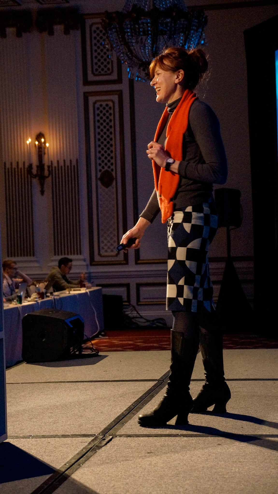

How She Got There
An interview with Mule Design’s Erika Hall about philosophy, phone calls and her professional journey.
In the fall of 2013 I interviewed Erika Hall, co-founder of Mule Design Studio , one of the most influential design practices in North America. It was the first of fourteen interviews that I would conduct for my book How They Got There: Interviews With Digital Designers About Their Careers, and so in many ways it was the most important, too.
Erika had been profiled numerous times in many different forums, and her insights on design, business and technology were well known. I was after something narrower, though. I wanted to hear about the nitty gritty of her professional journey, the trials and tribulations she encountered in finding meaningful work, and the stories of her lucky breaks and less lucky mishaps. The goal of How They Got There was to document the random things that conspire together to forge every career, even very high profile ones like Erika’s.
I knew that, if it went off well, our discussion would serve as a kind of template for the others that would follow, and so I was relieved when Erika talked about her professional life with such unaffected candor and incisive wit. Her tales of the first dot-com bubble and burst, and how she salvaged from that wreckage the building blocks that would lead to Mule Design, were exactly what I was looking for. This interview remains one of my very favorites from all of the ones I conducted for How They Got There.
Did you think then that you would work in technology?
Not necessarily. I was surrounded by technology in a way I didn’t realize. In the fall of 1988, at Dartmouth, they introduced an email system, BlitzMail, which looked a lot like Eudora, and all the students used email. Here it was, the end of the ’80s, I have a networked computer. I send my papers to the library laser printer and then go pick them up on my way to class. I’m learning HyperTalk. I just thought, “Oh, everybody has Macs. That’s just the next evolution.” Then I graduated and found out 3 percent of people have Macs. I saw Windows for the first time and I thought, “What are you people doing? This is hideous. This is really horrifying.”
Anyway, technology had always been in the background. And maybe I had a very early version of that “everybody should code” mindset. I’d always had really nerdy and geeky friends. The first guy I dated in high school was already programming for NASA.
This was just something that really appealed to me, especially coming from Los Angeles. It seemed more substantive. I thought, “We’re going to make things with technology and it’s going to be awesome.”
I was also fleeing from being an English major, which is what everybody thought I was going to be because I was interested in language. I majored in Russian, and then I went to Russia for a while and got back and I thought, “No, I feel like I’ve learned all the Russian I really want to learn.” Also I saw the state of Russia and the economy there, and I knew, “My friends who majored in Chinese and economics, they’re the ones who made the correct bet.”
So, I had this stupid VC job and thought, “Okay, what am I going to do now?” One of my friends had Lynx and showed me, “This is the World Wide Web and all of these different servers are connected.” Then another friend of mine who worked at Apple said, “Oh, hey, here’s this thing called Mosaic.” My reaction was, “This! This is everything I’m interested in. This is everything that interested me in philosophy. This is everything that interested me about design and being an architect. This is everything that interested me in publishing.”
So when you saw the web, you said, “This is what I want to do.” How specific was that idea? Was it like, “I just want to do something in this industry” or was it “I want to be publishing here” or “I want to be programming”?
I wanted to somehow be involved. At that point, everybody was making it up as they went along. At the time, we were asking ourselves, “What is this for?” There was no commercial Internet. Having things online, being able to communicate asynchronously, always being networked — that was what I loved about being in school and communicating by email, and hating the phone. That was so natural to me.
I saw that and I thought it was exciting and I wanted to be involved in it, but I wasn’t totally clear on what that could be. What kind of job can you do with this? So I just started calling people up. “Hey, I want to do Internet-y things.” Something that I totally recommend is calling people up or emailing people and saying, “Hey, can I buy you coffee and have you talk about your career?” People will do that, and I totally did this.
Who were you calling up?
It was tech publishers and maybe more magazine-oriented people. Because of that, it ended up that somebody at IDG Publishing got my name.